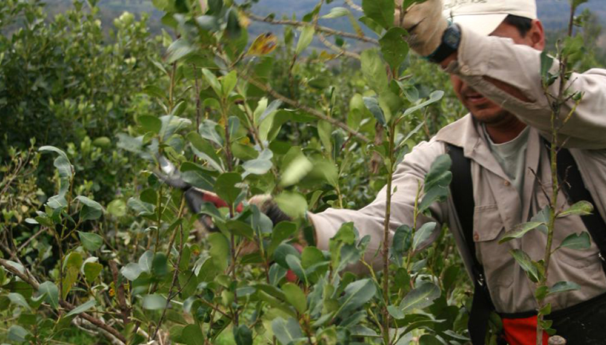

EL ESTRÉS
Factor de riesgo en la salud mental.

En 1992, la Federación Mundial para la Salud Mental junto con la OMS dispusieron el 10 de octubre como el día mundial. El objetivo es el de contribuir a la toma de conciencia sobre los problemas relacionados a esta temática...
CONOCÉ MÁSKaren Noll, expositora y productora de yerba mate certificada orgánica en la chacra Surucuá, destacó la importancia de trabajar en equilibrio con el medio ambiente para obtener un producto diferenciado. Noll explicó que el manejo de la yerba mate orgánica en consonancia con el enfoque agroecológico...
CONOCÉ MÁSYERBA MATE ORGÁNICA
Su impacto en Misiones: Productores destacan avances y desafíos.

